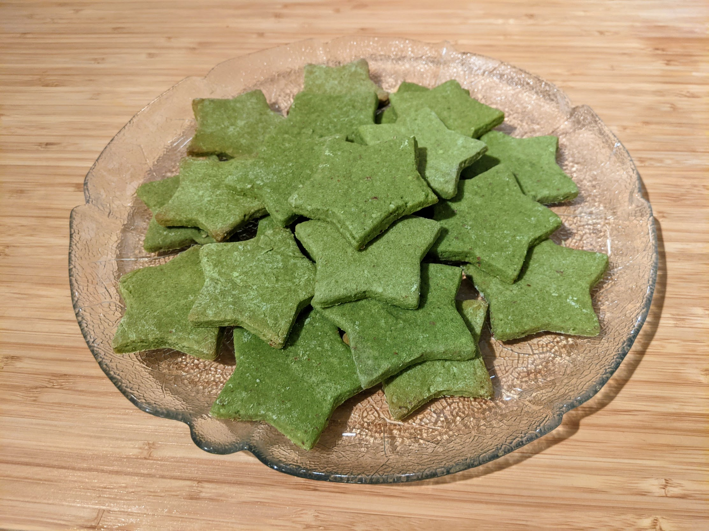

Sablés au matcha

Pour une vingtaine de gros sablés, ou une quarantaine de petits :
- 125g de beurre
- 75g de sucre
- Au moins 125g de farine, mais il faut prévoir pas mal de rab'
- 50g de poudre d'amandes
- 15g de poudre de matcha
- Un œuf
- Un sachet de sucre vanillé
- Une pincée de sel
- Sortir le beurre pour le faire ramollir. Mélanger farine, poudre de matcha et amandes.
- Fouetter le beurre avec le sucre, le sucre vanillé, l'œuf et le sel, jusqu'à ce que ça devienne pâle, crémeux et uniforme.
- Mélanger les deux préparations dans un saladier avec les doigts, et former une boule. Si ça refuse de former une jolie boule parce que ça reste trop collé, ajouter de la farine.
- Mouiller un torchon propre, mettre la boule dans le torchon, et la mettre au frigo pendant une heure (ou plus).
- Fariner une planche, aplatir la boule dessus avec un rouleau à pâtisserie fariné, former des sablés avec un emporte-pièces (ou un petit verre), les disposer sur un plaque de papier sulfurisé.
- Faire cuire 15 minutes au four à 170°C. Déguster une fois refroidi, par exemple avec du thé.
Retour à la liste des recettes